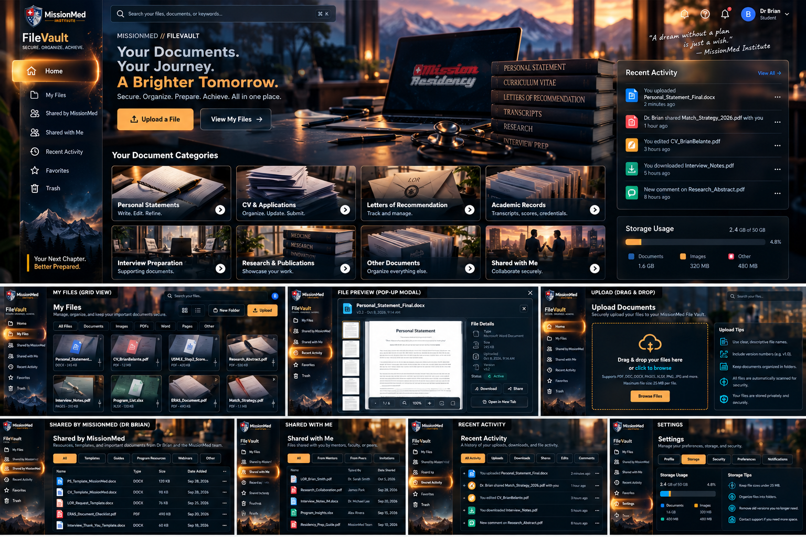
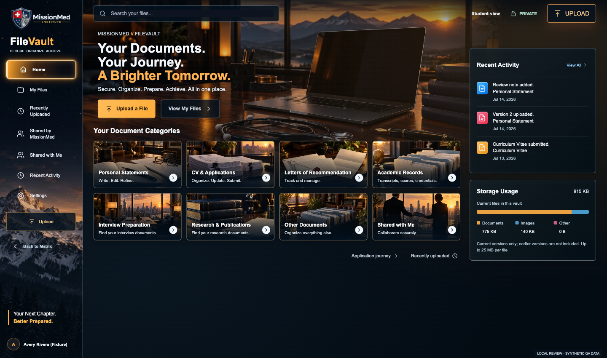

J1 FILE VAULT / FOUNDER CHECKPOINT
Your File Vault, rebuilt against the approved reference.
This is the existing File Vault V2 application running the committed visual candidate with clearly marked synthetic QA data. It is interactive. Production, permissions, storage, and release pins remain unchanged.
Open student candidateOpen administrator candidateScreenshot contact sheet
Local review only · Source 20b4f6616fffd554ef73f7c8d7a2fc480524782bUse full Chrome for native PDF viewing. The Codex embedded browser does not render its native PDF plug-in; the rendered preview screenshot was captured in full Chrome. Upload, sharing, and role changes in this harness operate on disposable synthetic fixtures, not real accounts.
Compare the approved reference with the real interface

Founder-approved collage, preserved without modification.
Actual student homepage · 1440 px. Synthetic QA data.What matches, and what remains different
The candidate reproduces the glowing gold navigation, authentic MissionMed branding, dark photographic desk/laptop/book composition, eight image categories, translucent activity/storage panels, and animated atmospheric layers. Three screenshot passes refined the hero crop, desktop density, touch targets, mobile branding, and text wrapping.
- Photography is newly generated original imagery; it is not identical to the illustration. The collage is not used as app UI.
- Document lists, activity, sharing and storage reflect authorized data. Storage sums current files and excludes older versions; no total quota is invented.
- Favorites, Trash and new-folder controls are absent because the existing API does not provide them. Interview/research cards search actual file metadata.
- Settings remains the existing preferences dialog, restyled with storage/security context. Staff uses its real directory, review, sharing and audit flows.
- PDF uses the browser’s actual viewer; DOCX and Pages use a safe native-download fallback. Private signed delivery still needs authenticated post-approval release QA.
Verification
1,008 checks pass: 623 browser/workflow checks, 80 new visual/responsive checks, 117 PHP contracts, 179 repository workflows and 9 scanner contracts. Requested widths: 1440, 1280, 1024, 768 and 390 px. Cinematic assets total 473,879 bytes. Observed synthetic homepage layout shift: 0; 283 DOM nodes. These local results are not production acceptance.
The release-byte lock intentionally rejects changed mutable candidate assets against the old immutable release; no lock was weakened. Protected Matrix V1 local/origin/public hashes pass. Production packaging, deployment and authenticated QA await explicit Founder approval and fresh release authority.
All captured views
Full results and exact source scope · Visual implementation map · Exact generation prompts · Verified Brain delta